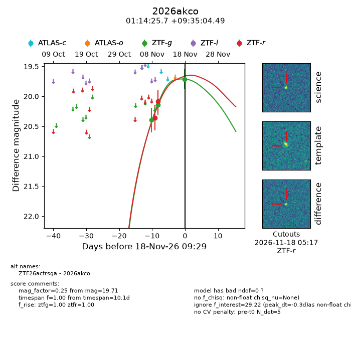
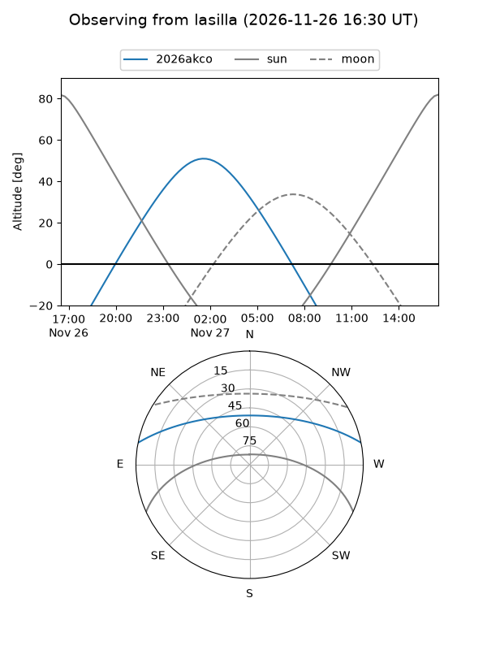
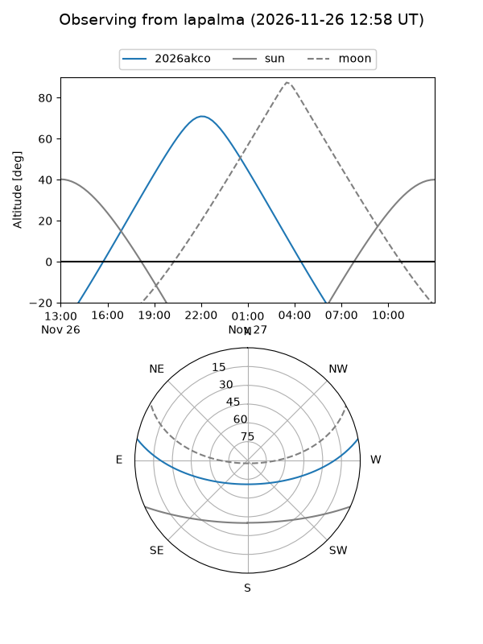
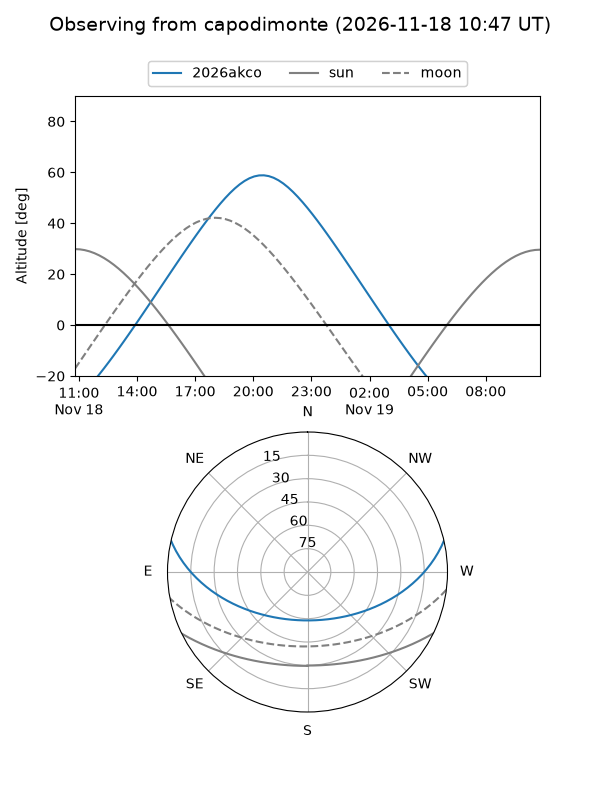
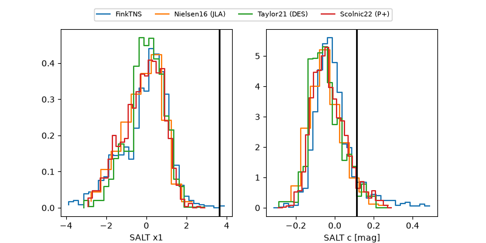

2026akco
Target 2026akco at 2026-11-18 09:30
Aliases and brokers:
FINK-ZTF: ztf.fink-portal.org/ZTF26acfrsga
Lasair-ZTF: lasair-ztf.lsst.ac.uk/objects/ZTF26acfrsga
ALeRCE-ZTF: alerce.online/object/ZTF26acfrsga
YSE-PZ: ziggy.ucolick.org/yse/transient_detail/2026akco
TNS name: wis-tns.org/object/2026akco
Direct TNS query: direct search
alt names
ZTF26acfrsga (ztf,fink_ztf)
2026akco (tns,yse)
Coordinates:
equatorial (ra, dec) = 18.6070,+9.58458
equatorial (HMS+DMS) = 01:14:25.69,+09:35:04.49
galactic (l, b) = (132.3465,-52.86640)
Flags:
peak dt: -0.3
Photometry:
last ztfg=19.71, ztfr=20.09
3 ztfg, 2 ztfr detections
Lightcurve

Visibility



Additional plots
